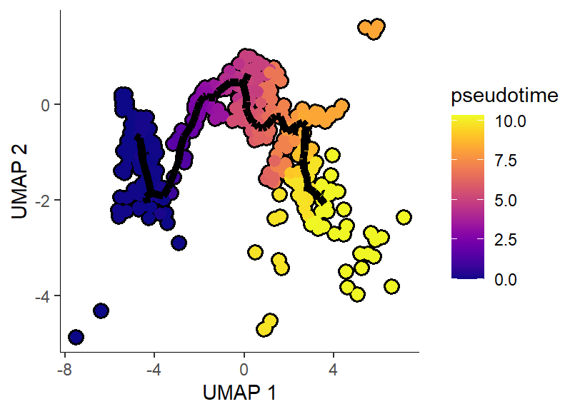

plot11 · 代码 6 · 图 1 · 笔记 6 · 代码库专题
单细胞拟时序分析
代码库整理的专题，README 见原始目录。

p1KS-scRNA 拟时分析/Monocle3/4-2024-10-14 monocle3拟时热图celltype密度图(8)/p1.png
共 7 张：点缩略图切换主图，下载按钮跟随当前主图。

图源：p1.png
分析代码
8 个源码文件，按目录顺序；本机绝对路径已替换为 ~。 代码可复制，但需要按自己的数据改路径与参数。
cytotrace/02_hz学习与复用/01_最小可运行验证.r
#!/usr/bin/env Rscript
# ==============================================================================
# CytoTRACE 最小可运行验证（用官方自带数据，实测通过）
# ------------------------------------------------------------------------------
# 目的：确认 CytoTRACE 在**当前 R 环境**下能跑通，并验证修复补丁是否生效。
#
# 实测环境：R 4.5.1 + CytoTRACE 0.3.1 + ggplot2 4.0.3 + Seurat 5.3.0
# 官方环境：R >= 4.0.0（DESCRIPTION 声明），README 另称 R >= 3.5.1（自相矛盾）
#
# 前置依赖（R 侧全部来自 CRAN）：
# sva, HiClimR, ccaPP, nnls, reticulate, ggplot2, egg, RColorBrewer, Rtsne, ggpubr, plyr
# —— 若缺 ccaPP，安装：install.packages("ccaPP")
# Python 侧 scanoramaCT 只有 iCytoTRACE（跨批次整合）才需要，本脚本不涉及。
#
# 用法：
# Rscript 01_最小可运行验证.R
# （可在 cytotrace/ 或 02_hz学习与复用/ 下执行；
# 也可用环境变量 CYTO_TRACE_SRC 指定 01_官方源码 路径）
# ==============================================================================
# ---------------------------------------------------------------- 0. 定位路径
find_dir <- function(rel, marker) {
cands <- c(Sys.getenv("CYTO_TRACE_SRC", ""), "../01_官方源码", "01_官方源码",
"../../01_官方源码", ".")
for (p in cands) {
if (nzchar(p) && file.exists(file.path(p, rel, marker))) return(normalizePath(p))
}
stop(sprintf("找不到含 %s/%s 的 01_官方源码 目录", rel, marker))
}
SRC <- find_dir("R", "plotCytoTRACE.R")
cat("[路径] 源码目录:", SRC, "\n")
script_arg <- grep("^--file=", commandArgs(trailingOnly = FALSE), value = TRUE)
script_dir <- if (length(script_arg) > 0) {
dirname(normalizePath(sub("^--file=", "", script_arg[1])))
} else getwd()
out_dir <- file.path(script_dir, "result")
if (!dir.exists(out_dir)) dir.create(out_dir, recursive = TRUE)
# ---------------------------------------------------------------- 1. 检查依赖
cat("\n--- 依赖检查 ---\n")
deps <- c("sva", "HiClimR", "ccaPP", "nnls", "reticulate", "ggplot2",
"egg", "RColorBrewer", "Rtsne", "ggpubr", "plyr")
missing <- deps[!vapply(deps, requireNamespace, logical(1), quietly = TRUE)]
cat(" 已装:", length(deps) - length(missing), "/", length(deps), "\n")
if (length(missing)) {
cat(" 缺失:", paste(missing, collapse = ", "), "\n")
stop("请先安装缺失依赖：install.packages(c(",
paste0('"', missing, '"', collapse = ", "), "))")
}
if (!requireNamespace("CytoTRACE", quietly = TRUE)) {
stop("CytoTRACE 包未安装。请在 01_官方源码 目录下执行：\n",
sprintf(" R CMD INSTALL --library=<你的库路径> %s\n", SRC),
"或： install.packages('", SRC, "', repos=NULL, type='source')")
}
suppressMessages(library(CytoTRACE))
cat(" CytoTRACE 版本:", as.character(packageVersion("CytoTRACE")),
" ggplot2:", as.character(packageVersion("ggplot2")), "\n")
# ---------------------------------------------------------------- 2. 加载官方数据
e <- new.env()
load(file.path(SRC, "data", "marrow_10x_expr.rda"), envir = e)
load(file.path(SRC, "data", "marrow_10x_pheno.rda"), envir = e)
expr <- get("marrow_10x_expr", e)
pheno_all <- get("marrow_10x_pheno", e)
cat("\n[数据] marrow_10x_expr:", paste(dim(expr), collapse = " x "),
"(基因 x 细胞)；取值", paste(round(range(expr), 1), collapse = " ~ "),
"→ 原始 counts（不会被误判为已 log）\n")
# 全量 3427 细胞会触发 fast mode（子采样）；这里取前 300 个细胞做快速验证
set.seed(42)
n_cells <- min(300, ncol(expr))
sub <- expr[, seq_len(n_cells)]
pheno <- pheno_all[colnames(sub)]
cat("[子集] ", dim(sub)[1], " 基因 x ", dim(sub)[2], " 细胞\n", sep = "")
# ---------------------------------------------------------------- 3. 跑主流程
cat("\n========== CytoTRACE() 主流程 ==========\n")
t0 <- Sys.time()
res <- CytoTRACE(sub, enableFast = FALSE, ncores = 1)
cat("========== 完成，耗时 ",
round(as.numeric(difftime(Sys.time(), t0, units = "secs")), 1), " 秒 ==========\n", sep = "")
cat("\n返回结构:\n")
for (nm in names(res)) {
v <- res[[nm]]
cat(sprintf(" %-16s %-12s %s\n", nm, class(v)[1], paste(dim(v), collapse = " x ")))
}
cat("\nCytoTRACE 得分范围:", paste(round(range(res$CytoTRACE), 3), collapse = " ~ "),
"（1.0 = 最未分化，0.0 = 最分化）\n")
cat("与 CytoTRACE 最相关的基因 (top5):", paste(head(names(res$cytoGenes), 5), collapse = ", "), "\n")
cat(" ↑ 出现核糖体蛋白基因（Rpl*/Rps*）是正常现象：它们与细胞的总转录活性/基因计数强相关\n")
# ---------------------------------------------------------------- 4. 打补丁并绘图
cat("\n========== 绘图（先打修复补丁）==========\n")
# 防御：CytoTRACE 的绘图函数在部分分支会把图往"当前默认设备"画（见补丁里的缺陷 4），
# 在 Rscript 非交互模式下没有默认设备时，R 会自动在工作目录创建 Rplots.pdf 兜底。
# 这里先打开一个空设备把这类未定向输出吸收掉，保持工作目录干净。
# （CytoTRACE 自己用 pdf(file) 显式写盘的图不受影响。）
pdf(NULL)
on.exit(dev.off(), add = TRUE)
patch <- file.path(script_dir, "02_修复补丁_plotCytoTRACE.R")
if (!file.exists(patch)) patch <- "../02_修复补丁_plotCytoTRACE.R"
if (file.exists(patch)) {
source(patch)
} else {
cat("[警告] 未找到修复补丁，plotCytoTRACE 可能在默认用法下崩溃\n")
}
# 注意 1：outputDir 必须以 "/" 结尾，否则文件名会和目录名拼在一起
# （传 "out" 得到 "outCytoTRACE_plot.pdf"，传 "out/" 才是 "out/CytoTRACE_plot.pdf"）
# 注意 2：plotCytoTRACE 内部文件名是写死的，不同参数会互相覆盖，故每次调用分目录存
for (g in list(NULL, "CD34")) {
tag <- if (is.null(g)) "noGene" else paste0("gene_", g)
d <- file.path(out_dir, tag)
if (!dir.exists(d)) dir.create(d, recursive = TRUE)
r <- try(plotCytoTRACE(res, phenotype = pheno, gene = g,
outputDir = paste0(d, "/")), silent = TRUE)
cat(sprintf(" %-20s -> %s\n",
if (is.null(g)) "无 gene（默认用法）" else paste0("gene=", g),
if (inherits(r, "try-error")) paste("崩溃:", sub("\n.*", "", as.character(r)))
else "成功"))
}
cat("\n[产物] ", out_dir, "\n", sep = "")
for (f in list.files(out_dir, pattern = "\\.(pdf|txt)$", recursive = TRUE, full.names = TRUE)) {
cat(" ", sub(paste0(out_dir, "/"), "", f, fixed = TRUE), "\n")
}
cat("\n提示：CytoTRACE 的输出图全部是 PDF（源码用 pdf()/dev.off() 写盘），符合本仓库出图约定。\n")
cat("\n=== 验证完成 ===\n")
cytotrace/02_hz学习与复用/02_修复补丁_plotcytotrace.r
# ==============================================================================
# CytoTRACE 修复补丁：让 plotCytoTRACE() 在现代环境下可用
# ------------------------------------------------------------------------------
# 【背景】
# 官方 plotCytoTRACE() 在**默认用法下必然崩溃**，共三处缺陷（均已实测定位）：
#
# 缺陷 1（致命）：调用了不存在的函数 error()
# R/plotCytoTRACE.R:80-82
# if(length(gene_exp) != length(cyto)){
# error("The length of the 'otherValue' object ...") # ← error() 不是 R 函数
# }
# `gene` 与 `otherValue` 都为 NULL（最普通的用法）时，gene_exp 是 NULL，
# length(NULL) = 0 != length(cyto) 恒成立 → 进入分支 → could not find function "error"
# 实测：plotCytoTRACE(res, phenotype=pheno) 直接报错，连图都不出。
#
# 缺陷 2（致命）：ifelse 逻辑颠倒 + NULL 时崩溃
# R/plotCytoTRACE.R:273
# name = ifelse(!is.null(otherName), "Gene\nexpression", otherName)
# 两个问题：
# (a) 逻辑反了——otherName 非空时该用 otherName，却返回了 "Gene\nexpression"；
# (b) otherName = NULL 时，ifelse(FALSE, "Gene\nexpression", NULL) 内部会执行
# ans[npos] <- rep(NULL, length.out = 1)[npos]，右侧长度为 0 → 报错
# "replacement has length zero"（调用栈：continuous_scale -> ifelse）
# 实测：即使绕过缺陷 1，只要传 gene= 就崩在这里。
#
# 缺陷 3（环境相关）：使用 ggplot2 4.x 已删除的 guide_colourbar() 参数
# R/plotCytoTRACE.R:275, 295, 321（共 3 处）
# guide = guide_colourbar(ticks.colour = "black",
# ticks.linewidth = 1,
# frame.colour = "black")
# 这三个参数在 ggplot2 3.5 弃用、**4.0 已移除**（改由 theme 控制）。
# 本机 ggplot2 4.0.3 下它们被吞进 `...`，不是致命错误但属失效参数。
#
# 缺陷 4（副作用）：ggarrange 的 `newpage = T` 会在工作目录留下 Rplots.pdf
# R/plotCytoTRACE.R:341
# mp <- egg::ggarrange(p3, p1, p2, nrow = 1, newpage = T)
# 只有"同时传 phenotype 和 gene"这一条分支带 newpage = T（同函数 345/349/353
# 行的其它三条分支都没有，显然是漏删）。它会把图往**当前设备**画一页，
# 而此时没有打开的 pdf()，于是落到默认设备 → 在 cwd 生成 Rplots.pdf。
# 实测：跑一次验证脚本多出 89KB 的 Rplots.pdf。ggexport 自己会处理输出，
# 该参数是多余的。
#
# 【修复后实测】（R 4.5.1 + ggplot2 4.0.3 + CytoTRACE 0.3.1，官方 marrow_10x_expr 前 300 细胞）
# 无 gene 调用 -> 成功，输出 CytoTRACE_plot.pdf
# gene="Rpl4" -> 成功
# gene="CD34" -> 成功
# 生物学合理性核对：干性区域（Stem and progenitors）CytoTRACE 得分高、
# 完全分化的 Erythrocytes 得分低，Cd34 在干性区域高表达 —— 符合预期。
#
# 【用法】
# source("02_修复补丁_plotCytoTRACE.R") # 必须在 library(CytoTRACE) 之后
# 之后正常调用 plotCytoTRACE(...) 即可。
#
# 本补丁不修改 01_官方源码/ 里的原始文件，只在其副本上做字符串替换后 eval，
# 改动点全部显式列出，便于核对与回退。
#
# 另注（未在补丁中改动，属使用习惯）：
# plotCytoTRACE 的 outputDir 参数**必须以 "/" 结尾**（文档里写明了，但容易忽略）。
# 传 "out" 会生成 "outCytoTRACE_plot.pdf"（文件名与目录名拼在一起）；
# 传 "out/" 才会生成 "out/CytoTRACE_plot.pdf"。
# ==============================================================================
local({
# ---- 定位源码目录（优先环境变量，其次常见相对路径）----
find_src <- function() {
cands <- c(Sys.getenv("CYTO_TRACE_SRC", ""),
"../01_官方源码", "01_官方源码", "../../01_官方源码", ".")
for (p in cands) {
if (nzchar(p) && file.exists(file.path(p, "R", "plotCytoTRACE.R"))) {
return(normalizePath(p))
}
}
stop("找不到 01_官方源码 目录，请设置环境变量 CYTO_TRACE_SRC 指向它")
}
src_dir <- find_src()
src <- paste(readLines(file.path(src_dir, "R", "plotCytoTRACE.R")), collapse = "\n")
n_fix <- c(err = 0L, ifelse = 0L, guide = 0L, newpage = 0L)
# ---- 修复 1: error() -> stop()，并补上 NULL 检查 ----
old1 <- "if(length(gene_exp) != length(cyto)){"
new1 <- "if(!is.null(gene_exp) && length(gene_exp) != length(cyto)){"
if (grepl(old1, src, fixed = TRUE)) {
src <- sub(old1, new1, src, fixed = TRUE); n_fix["err"] <- 1L
}
src <- sub(" error(\"The length of the", " stop(\"The length of the", src, fixed = TRUE)
# ---- 修复 2: ifelse 逻辑颠倒 + NULL 崩溃 ----
old2 <- "ifelse(!is.null(otherName), \"Gene\\nexpression\", otherName)"
new2 <- "if (!is.null(otherName)) otherName else \"Gene\\nexpression\""
if (grepl(old2, src, fixed = TRUE)) {
src <- gsub(old2, new2, src, fixed = TRUE); n_fix["ifelse"] <- 1L
}
# ---- 修复 3: 移除 ggplot2 4.x 已删除的 guide_colourbar 参数（3 处）----
n_fix["guide"] <- lengths(regmatches(
src, gregexpr("guide_colourbar(ticks.colour = \"black\",", src, fixed = TRUE)))
src <- gsub("guide_colourbar(ticks.colour = \"black\",", "guide_colourbar(#", src, fixed = TRUE)
src <- gsub("ticks.linewidth = 1,", "", src, fixed = TRUE)
src <- gsub("frame.colour = \"black\")", ")", src, fixed = TRUE)
# ---- 修复 4: 去掉 ggarrange 的 newpage = T（会在当前默认设备上画一页）----
# R/plotCytoTRACE.R:341
# mp <- egg::ggarrange(p3, p1, p2, nrow = 1, newpage = T)
# 只有"同时传 phenotype 和 gene"这一条分支带 newpage = T；它会往**当前设备**
# 绘制一页，而此时并没有打开的 pdf()，于是落到默认设备，在**工作目录生成 Rplots.pdf**
# （实测：跑一次验证脚本多出 89KB 的 Rplots.pdf）。同一函数的其它三条分支
# （345/349/353 行）都没有这个参数——显然是漏删。ggexport 自己会处理输出，
# 该参数在这里是多余的。
if (grepl("nrow = 1, newpage = T", src, fixed = TRUE)) {
src <- gsub("nrow = 1, newpage = T", "nrow = 1", src, fixed = TRUE)
n_fix["newpage"] <- 1L
}
# ---- 生效 ----
eval(parse(text = src), envir = globalenv())
cat(sprintf(paste0("[补丁] plotCytoTRACE 已修复：error->stop(%d)、ifelse 逻辑(%d)、",
"guide_colourbar(%d 处)、newpage 副作用(%d 处)\n"),
n_fix["err"], n_fix["ifelse"], n_fix["guide"], n_fix["newpage"]))
if (n_fix["err"] == 0 || n_fix["ifelse"] == 0 || n_fix["newpage"] == 0) {
warning("有修复点未匹配到，源码可能已不是原始版本，请核对", call. = FALSE)
}
})
ks-scrna 拟时分析/monocle2/monocle2分析更新版.r
setwd("D:/KS项目/公众号文章/monocle2更新版")
library(Seurat)
install.packages("C:~/monocle_2.26.0.tar.gz", repos = NULL, type = "source")
library(monocle)
devtools::load_all("C:~/AppData/Local/R/win-library/4.2/monocle")
library(dplyr)
# #提取文件做monocle分析
# #基因表达矩阵
# mouse_expr<-as.sparse(mouse_data[["RNA"]]@counts)
# #分组信息
# mouse_idents<-mouse_data@meta.data
# #基因信息
# mouse_features <-as.matrix(mouse_expr[,1])
# mouse_features[,1] <-row.names(mouse_features)
# colnames(mouse_features)[1] <-c("gene_short_name")
# mouse_features<-data.frame(mouse_features)
#
#
# #创建monocle文件
# mouse_idents <- new("AnnotatedDataFrame", data = mouse_idents)
# mouse_features <- new("AnnotatedDataFrame", data = mouse_features)
# mouse_monocle <- newCellDataSet(as.matrix(mouse_expr),
# phenoData = mouse_idents,
# featureData = mouse_features,
# expressionFamily=negbinomial.size())
#===========================================================================
seurat_to_monocle <- function(otherCDS, assay, slot, lowerDetectionLimit = 0, import_all = FALSE) {
if(class(otherCDS)[1] == 'Seurat') {
requireNamespace("Seurat")
data <- GetAssayData(otherCDS, assay = assay, slot = slot)
data <- data[rowSums(as.matrix(data)) != 0,]
pd <- new("AnnotatedDataFrame", data = otherCDS@meta.data)
fData <- data.frame(gene_short_name = row.names(data), row.names = row.names(data))
fd <- new("AnnotatedDataFrame", data = fData)
if(all(data == floor(data))) {
expressionFamily <- negbinomial.size()
} else if(any(data < 0)){
expressionFamily <- uninormal()
} else {
expressionFamily <- tobit()
}
valid_data <- data[, row.names(pd)]
monocle_cds <- newCellDataSet(data,
phenoData = pd,
featureData = fd,
lowerDetectionLimit=lowerDetectionLimit,
expressionFamily=expressionFamily)
if(import_all) {
if("Monocle" %in% names(otherCDS@misc)) {
otherCDS@misc$Monocle@auxClusteringData$seurat <- NULL
otherCDS@misc$Monocle@auxClusteringData$scran <- NULL
monocle_cds <- otherCDS@misc$Monocle
mist_list <- otherCDS
} else {
mist_list <- otherCDS
}
} else {
mist_list <- list()
}
}
return(monocle_cds)
}
mouse_monocle_fun <- seurat_to_monocle(mouse_data, assay = "RNA", slot = "counts")
#===========================================================================
#Estimate size factors and dispersions
mouse_monocle <- estimateSizeFactors(mouse_monocle_fun)
mouse_monocle <- estimateDispersions(mouse_monocle)
#质量控制
mouse_monocle <- detectGenes(mouse_monocle, min_expr = 0.1)#至少10%的表达，这一步完成之后，会出现num_cells_expressed这一列
print(head(fData(mouse_monocle)))
print(head(pData(mouse_monocle)))
expressed_genes <- row.names(subset(fData(mouse_monocle), num_cells_expressed >= 10))
pData(mouse_monocle)$Total_mRNAs <- Matrix::colSums(exprs(mouse_monocle))#将UMI加入cds
mouse_monocle <- mouse_monocle[,pData(mouse_monocle)$Total_mRNAs < 1e6]#阈值按照自己实际情况
#选差异基因(可以使用多个方法),主要是用于后期order cell，可自定义
#====================method1====================================================
#monocle计算高变基因
cds_monocle <- mouse_monocle
disp_table <- dispersionTable(cds_monocle)
unsup_clustering_genes <- subset(disp_table, mean_expression >= 0.1)#meanexpression筛选标准按自己情况
head(unsup_clustering_genes)
cds_monocle <- setOrderingFilter(cds_monocle, unsup_clustering_genes$gene_id)
save(cds_monocle, file = 'cds_monocle.RData')
#====================method2====================================================
#使用seurat计算
cds_seurat <- mouse_monocle
seurat_variable_genes <- VariableFeatures(FindVariableFeatures(mouse_data, assay = "RNA"), assay = "RNA")
cds_seurat <- setOrderingFilter(cds_seurat, seurat_variable_genes)
plot_ordering_genes(cds_DGT)
save(cds_seurat, file = 'cds_seurat.RData')
#====================method3====================================================
#differentialGeneTest
cds_DGT <- mouse_monocle
diff_test_res <- differentialGeneTest(cds_DGT,fullModelFormulaStr = "~celltype")
ordering_genes <- row.names (subset(diff_test_res, qval < 0.01))
# ordering_genes <- row.names(diff_test_res)[order(diff_test_res$qval)][1:2000]#或者选择前多少的基因
cds_DGT <- setOrderingFilter(cds_DGT, ordering_genes)
plot_ordering_genes(cds_DGT)
save(cds_DGT, file = "cds_DGT.RData")
#################################################################################
#接下来我们以第三种方法进行
#降维,排序
cds_DGT <- reduceDimension(cds_DGT, max_components = 2,reduction_method = 'DDRTree')
cds_DGT <- orderCells(cds_DGT)
cds_DGT <- orderCells(cds_DGT, root_state = NULL, num_paths = NULL, reverse = T)
# #假设我们已经知道根了，就可以指定，这里我指定细胞群
# GM_state <- function(cds){
# if (length(unique(pData(cds)$State)) > 1){
# T0_counts <- table(pData(cds)$State, pData(cds)$celltype)[,"PMN(7)"]
# return(as.numeric(names(T0_counts)[which
# (T0_counts == max(T0_counts))]))
# } else {
# return (1)
# }
# }
#
# cds_DGT <- orderCells(cds_DGT, root_state = GM_state(cds_DGT))
#################################################################################
#初步可视化
plot_cell_trajectory(mouse_monocle, cell_size = 2.2, color_by = "celltype") +
facet_wrap(~celltype, nrow = 2)
plot_cell_trajectory(cds_DGT, color_by = "Pseudotime")
plot_cell_trajectory(cds_DGT, color_by = "orig.ident",cell_link_size = 1.5)
plot_cell_trajectory(cds_DGT, color_by = "State")
#基因表达拟时图
plot_cell_trajectory(cds_DGT, markers = "Il1b",use_color_gradient=T,cell_size = 1,cell_link_size = 1.5)
#各个分组拟时图
plot_cell_trajectory(cds_DGT, color_by = "orig.ident") + facet_wrap(~orig.ident, nrow = 2)
#################################################################################
#查看随着pseudotime变化的基因
cds_DGT_pseudotimegenes <- differentialGeneTest(cds_DGT,fullModelFormulaStr = "~sm.ns(Pseudotime)")
cds_DGT_pseudotimegenes_sig <- subset(cds_DGT_pseudotimegenes, qval < 0.01)
write.csv(cds_DGT_pseudotimegenes_sig,"cds_DGT_pseudotimegenes_sig.csv")
#筛选一些基因去做图，这里完全是为了作图，实际展示基因按照自己按要求
cds_DGT_pseudotimegenes_sig <- subset(cds_DGT_pseudotimegenes, qval < 1e-320)
Time_genes <- cds_DGT_pseudotimegenes_sig %>% pull(gene_short_name) %>% as.character()
p <- plot_pseudotime_heatmap(cds_DGT[Time_genes,],
num_cluster = 4,
show_rownames = T,
return_heatmap = T)
#################################################################################
#查看在分叉处的差异基因
BEAM_res <- BEAM(cds_DGT, branch_point = 1, cores = 1)
BEAM_res <- BEAM_res[order(BEAM_res$qval),]
BEAM_res <- BEAM_res[,c("gene_short_name", "pval", "qval")]
write.csv(BEAM_res,file = "BEAM_res.csv")
plot_genes_branched_heatmap(mouse_monocle[row.names(subset(BEAM_res, qval < 1e-120)),],
branch_point = 1,
num_clusters = 6,
cores = 1,
use_gene_short_name = T,
show_rownames = T)
# colorRampPalette(c("steelblue", "white","darkorange2", "orangered4"))(100)ks-scrna 拟时分析/slingshot/slingshot轨迹分析.r
setwd("D:/KS项目/公众号文章/slingshot拟时轨迹分析")
BiocManager::install("kstreet13/slingshot")
library(slingshot)
library(Seurat)
library(devtools)
library(Seurat)
library(cowplot)
library(ggplot2)
library(Matrix)
library(dplyr)
BiocManager::install("tradeSeq")
library(tradeSeq)
library(RColorBrewer)
#github：https://github.com/stellar/slingshot
#官网使用手册：https://bioconductor.org/packages/release/bioc/vignettes/slingshot/inst/doc/vignette.html
#slingshot轨迹分析需要准备两个文件
#1、具有降维信息的cell Matrix
#2、celltype cluster label
#============================================================================
# step1:准备分析文件run slingshot
#============================================================================
mouse_data <- readRDS("D:/KS项目/公众号文章/monocle3拟时分析/mouse_data.rds")
#我们大多使用Seurat单细胞对象，这里准备文件的后见一般有两种方式
###method1，最简单的办法，直接将Seurat对象转为SingleCellExperiment，因为slingshot的input支持：matrix, SingleCellExperiment, SlingshotDataSet, and PseudotimeOrdering.
sce <- as.SingleCellExperiment(mouse_data, assay = "RNA")#至于assay选啥按照自己实际数据，可能你的数据是integrated or SCT
#slingshot可以选择轨迹起点和终点，这里我们设置起点，起点的选择一般依据数据实际意义，生物学背景或者可以使用
#我们之前讲过的CytoTRACE去辅助推断轨迹root，不过还是要结合具体的生物学背景，不可盲目
sce_slingshot1 <- slingshot(sce, #这里是SingleCellExperiment单细胞对象
reducedDim = 'UMAP', #降维方式
clusterLabels = sce$celltype, #celltype
start.clus = 'PMN(0)', #轨迹起点,也可以不定义
approx_points = 150)
###method2，一步一步提取
#提取表达矩阵并构建SingleCellExperiment单细胞对象
expdata <- as.matrix(GetAssayData(object = mouse_data, slot = "data"))
sce <- SingleCellExperiment(assays = List(counts = expdata))
#添加降维信息到SingleCellExperiment对象
reduction_sce <- Embeddings(object = mouse_data, reduction = "umap")
reducedDims(sce) <- SimpleList(UMAP = reduction_sce)
colData(sce)$celltype <- mouse_data@meta.data$celltype
colData(sce)$orig.ident <- mouse_data@meta.data$orig.ident #这里的orig.ident在我这个数据里面相当于分组
#run slingshot
sce_slingshot2 <- slingshot(sce,
clusterLabels = 'celltype',
reducedDim = 'UMAP',
start.clus = 'PMN(0)',
approx_points = 150)
# SlingshotDataSet(sce_slingshot2) 查看轨迹信息
#可以看出，我们这个数据推断出3条轨迹
# class: SlingshotDataSet
#
# Samples Dimensions
# 6025 2
#
# lineages: 3
# Lineage1: PMN(0) PMN(2) PMN(5) PMN(1) PMN(4)
# Lineage2: PMN(0) PMN(2) PMN(5) PMN(3)
# Lineage3: PMN(0) PMN(2) PMN(6) PMN(7)
#
# curves: 3
# Curve1: Length: 18.39 Samples: 3918.34
# Curve2: Length: 19.222 Samples: 3543.35
# Curve3: Length: 20.293 Samples: 2525.62
#============================================================================
# step2:可视化轨迹
#============================================================================
#定义颜色
cell_pal <- function(cell_vars, pal_fun,...) {
if (is.numeric(cell_vars)) {
pal <- pal_fun(100, ...)
return(pal[cut(cell_vars, breaks = 100)])
} else {
categories <- sort(unique(cell_vars))
pal <- setNames(pal_fun(length(categories), ...), categories)
return(pal[cell_vars])
}
}
#----------------------------------------------------------------------------
#设置颜色并可视化。这里分组是celltype。在cell type上可视化轨迹
cell_colors <- cell_pal(sce_slingshot2$celltype, brewer_pal("qual", "Set2"))
plot(reducedDims(sce_slingshot2)$UMAP, col = cell_colors, pch=16, asp = 1, cex = 0.8)
lines(SlingshotDataSet(sce_slingshot2), lwd=2, col='black')
#计算细胞celltype中心坐标，用于标记
celltype_label <- mouse_data@reductions$umap@cell.embeddings%>%
as.data.frame() %>%
cbind(celltype = mouse_data@meta.data$celltype) %>%
group_by(celltype) %>%
summarise(UMAP1 = median(UMAP_1),
UMAP2 = median(UMAP_2))
for (i in 1:8) {
text(celltype_label$celltype[i], x=celltype_label$UMAP1[i]-1, y=celltype_label$UMAP2[i])
}
#还可以将分组设置为样本
group_colors <- cell_pal(sce_slingshot2$orig.ident, brewer_pal("qual", "Set2"))
plot(reducedDims(sce_slingshot2)$UMAP, col = group_colors, pch=16, asp = 1, cex = 0.8)
lines(SlingshotDataSet(sce_slingshot2), lwd=2, col='black')
#添加legend即可
legend("top",
pch=15,#形状
legend=unique(sce$orig.ident),#文字
bty="n",
col =unique(group_colors),#颜色
border="black",
horiz=T)
#----------------------------------------------------------------------------
##从前面的图上可以看出，我们的数据有三条轨迹,分别可视化三条轨迹拟时顺序
plot(reducedDims(sce_slingshot2)$UMAP, asp = 1, pch = 16, xlab = "UMAP_1", ylab = "UMAP_2",
col = hcl.colors(100, alpha = 0.5)[cut(sce_slingshot2$slingPseudotime_1, breaks = 100)])
lines(SlingshotDataSet(sce_slingshot2), linInd = 1, lwd = 2, col = 'black')
plot(reducedDims(sce_slingshot2)$UMAP, asp = 1, pch = 16, xlab = "UMAP_1", ylab = "UMAP_2",
col = hcl.colors(100, alpha = 0.5)[cut(sce_slingshot2$slingPseudotime_2, breaks = 100)])
lines(SlingshotDataSet(sce_slingshot2), linInd = 2, lwd = 2, col = 'black')
plot(reducedDims(sce_slingshot2)$UMAP, asp = 1, pch = 16, xlab = "UMAP_1", ylab = "UMAP_2",
col = hcl.colors(100, alpha = 0.5)[cut(sce_slingshot2$slingPseudotime_3, breaks = 100)])
lines(SlingshotDataSet(sce_slingshot2), linInd = 3, lwd = 2, col = 'black')
#----------------------------------------------------------------------------
##拟时密度图，类似于monocle2中的图形，绘制细胞或者样本分组在拟时轨迹的分布
#这里我们以第1条轨迹为示例
SlingshotDataSet(sce_slingshot2)#这里查看有哪些轨迹，轨迹中包含哪些细胞
density1 <- list(a_1 = density(slingPseudotime(sce_slingshot2)[colData(sce_slingshot2)$celltype == "PMN(0)", 1], na.rm = T), #这里的1表示取第一条轨迹
a_2 = density(slingPseudotime(sce_slingshot2)[colData(sce_slingshot2)$celltype == "PMN(2)", 1], na.rm = T),
a_3 = density(slingPseudotime(sce_slingshot2)[colData(sce_slingshot2)$celltype == "PMN(5)", 1], na.rm = T),
a_4 = density(slingPseudotime(sce_slingshot2)[colData(sce_slingshot2)$celltype == "PMN(1)", 1], na.rm = T),
a_5 = density(slingPseudotime(sce_slingshot2)[colData(sce_slingshot2)$celltype == "PMN(4)", 1], na.rm = T))
#作图范围
xlim <- range(c(density1$a_1$x, density1$a_2$x, density1$a_3$x, density1$a_4$x,density1$a_5$x))
ylim <- range(c(density1$a_1$y, density1$a_2$y, density1$a_3$y, density1$a_4$y, density1$a_5$y))
par(mar=c(6, 6, 6, 6), xpd = TRUE)
plot(xlim, ylim, col = "white", xlab = "Pseudotime", ylab = "")#基本作图
#添加密度图
for(i in 1:5) {
polygon(c(min(density1[[i]]$x),density1[[i]]$x, max(density1[[i]]$x)), c(0, density1[[i]]$y, 0),
col = alpha(brewer.pal(5, "Set1")[i], alpha = 0.5))#有几个样本颜色就填几
}
legend("right",
inset= -0.2,#legend位于画框右侧正中
pch=15,#形状
legend=c("PMN(0)","PMN(2)","PMN(5)","PMN(1)","PMN(4)"),#文字
bty="n",
col = alpha(brewer.pal(5, "Set1"), alpha = 0.5),#颜色
border="black",
title = "celltype",
cex = 0.8)
###也可以看样本的密度图
density1_s <- list(a_1 = density(slingPseudotime(sce_slingshot2)[colData(sce_slingshot2)$orig.ident == "10X_ntph_F", 1], na.rm = T), #这里的1表示取第一条轨迹
a_2 = density(slingPseudotime(sce_slingshot2)[colData(sce_slingshot2)$orig.ident == "10X_ntph_M", 1], na.rm = T))
#作图范围
xlim <- range(c(density1_s$a_1$x, density1_s$a_2$x))
ylim <- range(c(density1_s$a_1$y, density1_s$a_2$y))
par(mar=c(6, 6, 6, 6), xpd = TRUE)
plot(xlim, ylim, col = "white", xlab = "", ylab = "")#基本作图
#添加密度图
polygon(c(min(density1_s[[1]]$x),density1_s[[1]]$x, max(density1_s[[1]]$x)), c(0, density1_s[[1]]$y, 0),
col = alpha(brewer.pal(7, "Set1")[6], alpha = 0.5))#有几个样本颜色就填几
polygon(c(min(density1_s[[2]]$x),density1_s[[2]]$x, max(density1_s[[2]]$x)), c(0, density1_s[[2]]$y, 0),
col = alpha(brewer.pal(7, "Set1")[7], alpha = 0.5))#有几个样本颜色就填几
legend("right",
inset= -0.3,#legend位于画框右侧正中
pch=15,#形状
legend=c("10X_ntph_F","10X_ntph_M"),#文字
bty="n",
col = brewer.pal(8, "Set1")[7:8],#颜色
border="black",
title = "group",
cex = 0.8)
#做一下检验
ks.test(slingPseudotime(sce_slingshot2)[colData(sce_slingshot2)$orig.ident == "10X_ntph_F", 1], na.rm = T,
slingPseudotime(sce_slingshot2)[colData(sce_slingshot2)$orig.ident == "10X_ntph_M", 1], na.rm = T)
# Asymptotic two-sample Kolmogorov-Smirnov test
#
# data: slingPseudotime(sce_slingshot2)[colData(sce_slingshot2)$orig.ident == "10X_ntph_F", 1] and slingPseudotime(sce_slingshot2)[colData(sce_slingshot2)$orig.ident == "10X_ntph_M", 1]
# D = 0.05001, p-value = 0.009179
# alternative hypothesis: two-sided
####其他轨迹的可视化参照上面的代码
#----------------------------------------------------------------------------
#当然了，slingshot结果可以与最先的单细胞seurat对象联动
#这里我们将三个轨迹的pseudotime添加到单细胞对象中（Metadata）
pseudotime = slingPseudotime(sce_slingshot2)%>% as.data.frame()
Lineages = colnames(pseudotime)
for(i in 1:3){
pseudotime_sub <- pseudotime[,i]
mouse_data <- AddMetaData(object = mouse_data,
metadata = pseudotime_sub,
col.name = Lineages[i])
}
#这样我们就可以使用ggplot做密度图了，可调整性也就变宽了
#定义一个函数，作图更加方便
pseudotime_density <- function(seurat_obj,#已经添加了轨迹pseudotime
Lineage,#轨迹
cluster_label,#分群的列名，例如我注释的celltype列名是celltype，也可以是sample或者分组
color){
df <- data.frame(seurat_obj[[cluster_label]], seurat_obj[[Lineage]])
colnames(df) <- c("celltype", "Lineage")
na.omit(df) -> df
p <- ggplot(df, aes(x=Lineage, fill=celltype)) +
geom_density(alpha=0.5) +
theme_bw()+
scale_fill_manual(values = color)
print(p)
}
library(dittoSeq)
p1 <- pseudotime_density(mouse_data, Lineage="Lineage1", cluster_label = "celltype", color = dittoColors())+
theme(axis.title.x = element_blank())
p2 <- pseudotime_density(mouse_data, Lineage="Lineage1", cluster_label = "orig.ident", color = c("#DC050C","#8DD3C7"))
#拼图
library(patchwork)
p1+p2+plot_layout(ncol = 1,heights=c(1,1),guides = 'collect')
#----------------------------------------------------------------------------
#基因在不同轨迹随拟时表达变化
slingsce<-SlingshotDataSet(sce_slingshot2)
pseudotimeED <- slingPseudotime(slingsce, na = FALSE)
cellWeightsED <- slingCurveWeights(slingsce)
counts<-sce_slingshot2@assays@data@listData$counts
#这里分析我纳入的是虽有的基因
sce_slinghot <- fitGAM(counts = counts, pseudotime = pseudotimeED, cellWeights = cellWeightsED, nknots = 5, verbose = T)
mean(rowData(sce_slinghot)$tradeSeq$converged)
rowData(sce_slinghot)$assocRes <- associationTest(sce_slinghot, lineages = TRUE, l2fc = log2(2))
assocRes <- rowData(sce_slinghot)$assocRes
#作图
gene_dynamic <- list()
genes_plot <- c("S100a8","Anxa1","Ly6g","S100a9")
for(i in 1:length(genes_plot)){
p = plotSmoothers(sce_slinghot, assays(sce_slinghot)$counts,
gene =genes_plot[i], alpha = 0.6, border = T, lwd = 2)+
ggtitle(genes_plot[i])
gene_dynamic[[i]] <- p
}
Seurat::CombinePlots(gene_dynamic, ncol = 2)
#============================================================================
# step3:拟时基因热图分析
#============================================================================
#前面我们依据推断了轨迹，并进行了一些简单的可视化，那么后续其实最主要的就是关注
#随着拟时轨迹的基因变化。我们可以借助tradeSeq包进行分析。
#这里我们示例分析一下轨迹1,将轨迹1的拟时添加到Seurat对象
sce_slingshot2$sling_pseudotime = sce_slingshot2[[paste0("slingPseudotime_1")]]
mouse_data$sling_pseudotime = sce_slingshot2$sling_pseudotime
#仅分析在轨迹拟时中的细胞，去除NA
sce_slingshot2_l1 = sce_slingshot2[,!is.na(sce_slingshot2$sling_pseudotime)]
seur = mouse_data[,!is.na(mouse_data$sling_pseudotime)]
#这里分析比较慢，会花费数小时时间。
sce_slingshot2_l1 <- fitGAM(counts(sce_slingshot2_l1),
cellWeights = rep(1, ncol(sce_slingshot2_l1)),
pseudotime = sce_slingshot2_l1$sling_pseudotime)
ATres <- associationTest(sce_slingshot2_l1)
association_test_tab = as_tibble(cbind(gene = rownames(ATres), ATres))
#基因随拟时的分析完成后，我们需要利用Seurat对象和上面的分析结果
#构建拟时热图matrix，一步一步做很复杂，这里我们直接提供一个函数，用来获取matrix
#至于分散的步骤可自行查看函数
slingshot_for_plotMatrix <- function(seurat_obj,#添加了拟时并去除NA的seurat对象
n_bins,#拟时您需要分割的区间，将相似的拟时区间合并，这类似于我们monocle3中的方式
min_exp)#需要过滤的基因（这里是表达scale后的数值,选择>0的数值)
{
#提取metadata，并按照拟时先后排序
seurat_meta = seurat_obj@meta.data
seurat_meta = as_tibble(cbind(cell.id = as.character(rownames(seurat_meta)), seurat_meta))
seurat_meta = seurat_meta[order(seurat_meta$sling_pseudotime),]
#排序好的cell id
pl_cells = as.character(seurat_meta$cell.id)
#提取表达矩阵,并将cell id的exp排序与前面排序好的cell id一致
exp = seurat_obj@assays$RNA@data
exp = exp[,colnames(exp) %in% pl_cells]
expr_mat = exp[,order(match(colnames(exp), pl_cells))]
expr_mat = as.matrix(expr_mat[rownames(expr_mat) %in% association_test_tab$gene,])
clust_expr_mat = matrix(nrow = nrow(expr_mat),
ncol = n_bins, dimnames = list(rownames(expr_mat), 1:n_bins))
max_pseudotime = max(seurat_meta$sling_pseudotime)
pseudotime_bin_size = max_pseudotime/n_bins
pseudotime_cluster_stat = NULL
seurat_obj$pseudotime_bin = NA_integer_
for (i in 1 : n_bins){
bin_cells = seurat_meta$cell.id[(seurat_meta$sling_pseudotime > (i-1)*pseudotime_bin_size &
seurat_meta$sling_pseudotime <= i*pseudotime_bin_size)]
seurat_obj$pseudotime_bin[colnames(seurat_obj) %in% bin_cells] = i
#计算基因平均表达量
if (length(bin_cells)>10){
m2 = expr_mat[,colnames(expr_mat) %in% bin_cells]
clust_expr_mat[,i] = apply(m2, 1, mean, na.rm = TRUE)
}
}
#数据缩放一下，为了更好的展现热图，并删除低表达基因
mm1 = clust_expr_mat - apply(clust_expr_mat, 1, mean, na.rm = TRUE)
mm2 = mm1[apply(abs(mm1),1, max, na.rm = TRUE)>min_exp,]
return(mm2)
}
#一键获取拟时热图矩阵
mm = slingshot_for_plotMatrix(seurat_obj = seur, n_bins = 20, min_exp = 0.2)
#pheatmap作图
max_range = max(range(is.finite(mm)))
lim = c(-max_range, max_range)
library(pheatmap)
heatmap1 = pheatmap(mm, show_rownames=F, cluster_rows = TRUE,
cluster_cols = FALSE, show_colnames = FALSE,
clustering_distance_rows = "euclidean",
clustering_method = "ward.D2",
treeheight_row = 50,
cutree_rows = 5, #这里聚类module数自行选择
color = colorRampPalette(c("blue", "white", "red"))(250),
breaks = seq(lim[1]/4, lim[2]/4, length.out = 251),
border_color = NA)
#提取上面的热图聚类信息，提取module基因，并重新作图
tree_module = cutree(heatmap1$tree_row, k=5)
tree_module = tibble(gene = names(tree_module), module = as.character(tree_module))
tree_module = tree_module[heatmap1$tree_row$order,]
#这里得到的tree_module后续可进行富集分析
#后续热图的修饰和GO富集添加等参考monocle2
monocle2/01_monocle2美化/01_science083_monocle2轨迹_注释版复现.r
# =====================================================================
# Monocle2 单细胞分化轨迹图 — 注释版复现
# 来源: 顶刊美图社 第083期《跟着Science学作图 | Monocle2单细胞分化轨迹图》
# URL : https://mp.weixin.qq.com/s/SPeTGUqa0FGNyVxfZwyEvg
# 文献: Gómez-López S, Alhendi ASN, Przybilla MJ, et al.
# Aberrant basal cell clonal dynamics shape early lung carcinogenesis.
# Science. 2025;388(6752):eads9145. doi:10.1126/science.ads9145
# 整理: 2026-10-08 hz-bioinfo-codes
#
# 原文版本号: Seurat 5.3.1 | monocle 2.34.0 | ggplot2 4.0.0 | VGAM 1.1-13
# cowplot 1.2.0 | viridis 0.6.5 | Matrix 1.7-3 | dplyr 1.1.4
# 示例数据 Mouse_epithelial_seurat.rds 为小鼠肺上皮注释好的 Seurat 对象,
# meta.data 需含 celltypes 列; 分面图需 phenotype 列(对照/NTCU)。
# =====================================================================
library(Matrix) # 1.7-3
library(ggplot2) # 4.0.0
library(Seurat) # 5.3.1
library(monocle) # 2.34.0
library(dplyr) # 1.1.4
library(VGAM) # 1.1-13 (monocle2 硬依赖, NB 表达模型用它)
library(RColorBrewer) # 1.1-3
library(cowplot) # 1.2.0
library(viridis) # 0.6.5
set.seed(123)
# ---------------------------------------------------------------------
# 01 读入数据
# ---------------------------------------------------------------------
seurat.obj <- readRDS("Mouse_epithelial_seurat.rds")
# ---------------------------------------------------------------------
# 02 降采样 10% —— 原文为让 DDRTree 轨迹图更清晰(细胞太多会糊成一团)
# 实际项目按细胞总量权衡: 几千细胞可全量, >2万 建议抽 10%-30%
# ---------------------------------------------------------------------
seurat.obj@meta.data$cell_id <- rownames(seurat.obj@meta.data)
cell_id <- seurat.obj@meta.data$cell_id
num_cells <- length(cell_id)
num_cells_to_keep <- round(0.10 * num_cells)
indices_to_keep <- sample(1:num_cells, num_cells_to_keep)
cell_id_to_keep <- cell_id[indices_to_keep]
seurat.obj <- subset(seurat.obj, cell_id %in% cell_id_to_keep)
# 8 类细胞配色 —— 按自己项目的 celltype 改名即可, 数量不限
color_vector <- c(
"Basal Krt14+" = "#cc0099",
"Basal proliferative" = "#3333ff",
"Krt4/13+" = "#32b34e",
"Secretory" = "#7a00cc",
"Secretory Mecom+" = "#ccaaff",
"Basal Tgm2+" = "#ffcc00",
"Basal" = "#0bb1da",
"Basal Mecom+" = "#ff527d"
)
# ---------------------------------------------------------------------
# 03 Seurat -> CellDataSet (monocle2 的对象)
# Seurat5 转换时 assay 指定 "originalexp" (counts 层所在 assay)
# 下面的手动构建写法与 as.CellDataSet() 等价, 便于理解三件套结构:
# counts 矩阵 + phenoData(细胞元信息) + featureData(基因元信息)
# ---------------------------------------------------------------------
cds <- as.CellDataSet(seurat.obj, assay = "originalexp")
# 等价写法(83-92行代码等价于80行代码):
# data <- GetAssayData(seurat.obj, assay = "originalexp", layer = 'counts')
# pd <- new('AnnotatedDataFrame', data = seurat.obj@meta.data)
# fdata <- data.frame(gene_short_name = row.names(data),
# row.names = row.names(data))
# fd <- new('AnnotatedDataFrame', data = fdata)
# cds <- newCellDataSet(data, phenoData = pd, featureData = fd,
# lowerDetectionLimit = 0.5,
# expressionFamily = negbinomial.size())
# NB 模型需要的 size factor 与离散度估计(UMI counts 用 negbinomial.size)
cds <- estimateSizeFactors(cds)
cds <- estimateDispersions(cds) # 大数据这一步偏慢, 耐心等
# ---------------------------------------------------------------------
# 04 选 ordering genes: 按 celltypes 做 DE 检验, 取 qval 最小的前 400 个
# 这一步决定了轨迹形状 —— 换成自己数据时:
# (a) '~celltypes' 中的列名改成你的细胞类型列
# (b) 400 是可调参数, 常见取 400-2000
# ---------------------------------------------------------------------
cells.type.order <- c('Basal proliferative', 'Basal', 'Basal Tgm2+',
'Basal Mecom+', 'Basal Krt14+', 'Krt4/13+',
'Secretory', 'Secretory Mecom+')
pData(cds)$celltypes <- factor(pData(cds)$celltypes,
levels = cells.type.order)
clustering_DEG_genes <- differentialGeneTest(cds,
fullModelFormulaStr = '~celltypes')
clustering_ordering_genes <-
row.names(clustering_DEG_genes)[order(clustering_DEG_genes$qval)][1:400]
cds <- monocle::setOrderingFilter(cds,
ordering_genes = clustering_ordering_genes)
# DDRTree 降维(基于树的流形学习) + 排轨迹
cds <- monocle::reduceDimension(cds, method = 'DDRTree')
cds <- monocle::orderCells(cds) # 第一次跑: root_state 随机, 见 05 再排一次
# ---------------------------------------------------------------------
# 05 出图1: State 着色 —— DDRTree 推断出的分支状态 (Fig3F 左)
# ---------------------------------------------------------------------
plot.cell.state <- monocle::plot_cell_trajectory(cds, color_by = "State") +
theme_cowplot(font_size = 25) +
theme(legend.position = "top")
plot.cell.state
ggsave(plot.cell.state, file = "Mouse_epithelial_cell_state_monocle.pdf",
width = 6, height = 7)
# ---------------------------------------------------------------------
# 06 定根: 把 "增殖基底细胞" 最多的 State 设为时间零点
# 原理: 发育起点通常聚集某一细胞类型, 该类型所在 State 即为 root
# 自己数据用时把 "Basal proliferative" 换成你的"起点"细胞类型
# ---------------------------------------------------------------------
GM_state <- function(cds) {
if (length(unique(cds$State)) > 1) {
T0_counts <- table(cds$State, cds$celltypes)[, "Basal proliferative"]
return(as.numeric(names(T0_counts)[which(T0_counts == max(T0_counts))]))
} else {
return(1)
}
}
cds <- monocle::orderCells(cds, root_state = GM_state(cds))
# 出图2: 细胞类型着色 (Fig3F 右)
plot.cell.types <- monocle::plot_cell_trajectory(cds, color_by = "celltypes") +
theme_cowplot(font_size = 25) +
scale_color_manual(values = color_vector) +
guides(color = guide_legend(override.aes = list(size = 3, alpha = 1))) +
theme(legend.position = "none")
plot.cell.types
ggsave(plot.cell.types, file = "Mouse_epithelial_cell_types_monocle.pdf",
width = 6, height = 7)
# 出图3: Pseudotime 着色 (Fig3F 中) —— plasma 色带, 深紫=起点, 亮黄=终点
plot.pseudotime <- monocle::plot_cell_trajectory(cds, color_by = "Pseudotime") +
theme_cowplot(font_size = 25) +
theme(legend.position = "top") +
scale_color_viridis(option = "plasma")
plot.pseudotime
ggsave(plot.pseudotime, file = "Mouse_epithelial_pseudotime_monocle.pdf",
width = 6, height = 7)
# ---------------------------------------------------------------------
# 07 出图4: 最小生成树 + 按 phenotype 分面 (Fig3G)
# 前提: pData(cds)$phenotype 存在(Seurat meta.data 里的分组列,
# as.CellDataSet 会把 meta.data 全部带进 phenoData)
# 生物学解读: 对照 vs NTCU 并排看, NCU 组 Krt4/13+ 过渡态积聚、
# 分泌细胞减少 => 分化受阻
# ---------------------------------------------------------------------
pData(cds)$celltypes <- factor(pData(cds)$celltypes,
levels = cells.type.order)
plot.tree <- plot_complex_cell_trajectory(cds, color_by = 'celltypes',
show_branch_points = TRUE,
cell_size = 0.3,
cell_link_size = 1) +
facet_wrap(~phenotype, nrow = 1) +
theme_cowplot(font_size = 25) +
scale_color_manual(values = color_vector) +
guides(color = guide_legend(override.aes = list(size = 3, alpha = 1))) +
theme(legend.title = element_blank()) +
labs(x = "Component 1", y = "Component 2")
plot.tree
ggsave(plot.tree, file = "Mouse_epithelial_trajectory_tree_monocle.pdf",
width = 10, height = 6)
# ------------------END-------------------------------------------------
monocle2/01_monocle2美化/02_monocle2_复用函数.r
# =====================================================================
# Monocle2 轨迹分析 — 可复用函数封装
# 从 Science 2025 (eads9145) 复现代码抽取的通用流程,
# 换任何 Seurat 对象改 3 个参数即可跑通: meta 列名 / 起点细胞类型 / 配色
# 整理: 2026-10-08 hz-bioinfo-codes
# =====================================================================
library(Seurat)
library(monocle)
library(cowplot)
library(viridis)
# ---------------------------------------------------------------------
# 主函数: Seurat 对象 -> 拟时序 cds (含 State/Pseudotime/排序)
# ---------------------------------------------------------------------
# 用法:
# cds <- hz_run_monocle2(seurat.obj,
# celltype_col = "celltypes", # 你的细胞类型列
# root_celltype = "Basal proliferative", # 起点
# n_genes = 400, subsample_frac = 0.10)
hz_run_monocle2 <- function(seurat.obj,
celltype_col,
root_celltype,
n_genes = 400,
subsample_frac = NULL, # NULL = 不降采样
seed = 123) {
set.seed(seed)
# 可选降采样(细胞太多时 DDRTree 图会糊, 建议留 10%-30%)
if (!is.null(subsample_frac) && subsample_frac < 1) {
ids <- colnames(seurat.obj)
keep <- sample(ids, round(subsample_frac * length(ids)))
seurat.obj <- subset(seurat.obj, cells = keep)
}
# Seurat5 -> monocle2
cds <- as.CellDataSet(seurat.obj, assay = "originalexp")
cds <- estimateSizeFactors(cds)
cds <- estimateDispersions(cds)
# 细胞类型设为有序因子(影响 DE 模型和分面排序)
stopifnot(celltype_col %in% colnames(pData(cds)))
ct <- factor(pData(cds)[[celltype_col]])
pData(cds)$celltypes <- ct
# DE 选基因 -> DDRTree -> 排轨迹
deg <- differentialGeneTest(cds, fullModelFormulaStr = '~celltypes')
ord_genes <- rownames(deg)[order(deg$qval)][seq_len(min(n_genes, nrow(deg)))]
cds <- monocle::setOrderingFilter(cds, ordering_genes = ord_genes)
cds <- monocle::reduceDimension(cds, method = 'DDRTree')
cds <- monocle::orderCells(cds)
# 定根: root_celltype 最富集的 State 设为时间零点
root_state <- hz_pick_root_state(cds, root_celltype)
cds <- monocle::orderCells(cds, root_state = root_state)
cds
}
# ---------------------------------------------------------------------
# 定根函数: 返回某细胞类型细胞数最多的 State 编号
# (原文 GM_state, 把写死的 "Basal proliferative" 参数化了)
# ---------------------------------------------------------------------
hz_pick_root_state <- function(cds, root_celltype) {
if (length(unique(cds$State)) <= 1) return(1)
tab <- table(cds$State, cds$celltypes)
if (!root_celltype %in% colnames(tab))
stop("root_celltype '", root_celltype, "' 不在 cds$celltypes 中")
cnt <- tab[, root_celltype]
as.numeric(names(cnt)[which.max(cnt)])
}
# ---------------------------------------------------------------------
# 一键出图: State / 细胞类型 / Pseudotime / MST分面 四联图
# 返回命名的 plot 列表, 配色缺省用 hz 调好的 20 色
# ---------------------------------------------------------------------
hz_plot_monocle2 <- function(cds, color_vector = NULL,
facet_col = NULL, # 分面列名, 如 "phenotype"; NULL 不分面
font_size = 25) {
if (is.null(color_vector)) {
pal20 <- c("#E64B35","#4DBBD5","#00A087","#3C5488","#F39B7F",
"#8491B4","#91D1C2","#DC0000","#7E6148","#B09C85",
"#cc0099","#3333ff","#32b34e","#7a00cc","#ccaaff",
"#ffcc00","#0bb1da","#ff527d","#00C3C5","#8B008B")
lvls <- levels(factor(pData(cds)$celltypes))
color_vector <- setNames(pal20[seq_along(lvls)], lvls)
}
base_thm <- theme_cowplot(font_size = font_size)
p_state <- monocle::plot_cell_trajectory(cds, color_by = "State") +
base_thm + theme(legend.position = "top")
p_ctype <- monocle::plot_cell_trajectory(cds, color_by = "celltypes") +
base_thm + scale_color_manual(values = color_vector) +
guides(color = guide_legend(override.aes = list(size = 3, alpha = 1))) +
theme(legend.position = "none")
p_pstime <- monocle::plot_cell_trajectory(cds, color_by = "Pseudotime") +
base_thm + theme(legend.position = "top") +
scale_color_viridis(option = "plasma")
plots <- list(State = p_state, CellType = p_ctype, Pseudotime = p_pstime)
# MST + 分面(可选): 需 pData 里有分组列
if (!is.null(facet_col) && facet_col %in% colnames(pData(cds))) {
p_tree <- plot_complex_cell_trajectory(cds, color_by = 'celltypes',
show_branch_points = TRUE,
cell_size = 0.3,
cell_link_size = 1) +
facet_wrap(as.formula(paste("~", facet_col)), nrow = 1) +
base_thm + scale_color_manual(values = color_vector) +
guides(color = guide_legend(override.aes = list(size = 3, alpha = 1))) +
theme(legend.title = element_blank()) +
labs(x = "Component 1", y = "Component 2")
plots[["MST_facet"]] <- p_tree
}
plots
}
# ---------------------------------------------------------------------
# 使用示例(自己的数据):
# seurat.obj <- readRDS("your_annotated.rds")
# cds <- hz_run_monocle2(seurat.obj,
# celltype_col = "celltype", # meta 列名
# root_celltype = "HSC", # 发育起点
# n_genes = 1000, subsample_frac = 0.2)
# plots <- hz_plot_monocle2(cds, facet_col = "group") # "group" = 分组列
# for (nm in names(plots))
# ggsave(plots[[nm]], file = paste0("monocle2_", nm, ".pdf"),
# width = 6, height = 7)
# ---------------------------------------------------------------------
cytotrace/01_官方源码/r/cytotrace.r
#' @title CytoTRACE
#'
#' @description This function generates single-cell predictions of differentiation status from scRNA-seq data.
#' It takes in a matrix of gene expression values where columns are cells and rows are genes.\cr\cr
#' (Optional) Technical batches can be corrected with ComBat by inputting a character vector of batch
#' annotations matching the number of columns (cells) in the matrix. Furthermore, for the analysis of
#' large datasets (>3,000 cells), users can increase the speed performance by enabling a subsampling approach for calculation
#' and using multiple cores.
#'
#' @param mat matrix of gene expression values where columns are cells and rows are genes
#' @param batch character vector of length equal to the number of columns (cells) in the matrix
#' @param enableFast boolean indicating whether or not to run CytoTRACE in 'fast mode' for datasets with >3,000 cells. Fast mode uses a subsampling approach to reduce runtime.
#' @param ncores integer indicating the number of cores to utilize when enableFast = TRUE
#' @param subsamplesize integer indicating the number of cells to subsample when enableFast = TRUE
#'
#' @return a list containing
#' \itemize{
#' \item CytoTRACE: a numeric vector of the predicted ordering of single cells from 1.0 (least differentiated) to 0.0 (most differentiated)
#' \item CytoTRACErank: a numeric vector of the ranked predicted ordering of single cells by differentiation status. High ranks correspond to less differentiated cells, while low ranks correspond to more differentiated cells.
#' \item cytoGenes: a numeric vector of the Pearson correlation of each gene with CytoTRACE, ordered from highest to lowest
#' \item GCS: a numeric vector of the gene counts signature (geometric mean of the top 200 genes associated with gene counts)
#' \item gcsGenes: a numeric vector of the Pearson correlation of each gene with gene counts, ordered from highest to lowest
#' \item Counts: a numeric vector of the number of genes expressed per single cell (gene counts)
#' \item filteredCells: a character vector of the names of single cells (columns) that were filtered due to poor quality.
#' \item exprMatrix: a matrix of gene expression values after the following normalization steps: (i) sequencing depth normalization by rescaling single-cell transcriptomes to transcripts per million (TPM) or counts per million (CPM) (ii) log2-normalization with a pseudo-count of 1, and (iii) Census normalization (Qiu et al., 2017) to convert the gene expression matrix to relative transcript counts by rescaling single-cell transcriptomes to the total number of detectably expressed genes in that cell.
#'
#' }
#'
#' @author Gunsagar Gulati <<redacted-email>>
#'
#' @seealso https://cytotrace.stanford.edu
#'
#' @references https://doi.org/10.1101/649848
#'
#' @examples
#' #Use the bone marrow 10x scRNA-seq dataset to run CytoTRACE
#' results <- CytoTRACE(marrow_10x_expr)
#'
#' #Run this dataset on fast mode using 1 core
#' results <- CytoTRACE(marrow_10x_expr, enableFast = TRUE, ncores = 1)
#'
#' @export
CytoTRACE <- function(mat, batch = NULL, enableFast = TRUE,
ncores = 1,subsamplesize = 1000){
range01 <- function(x){(x-min(x))/(max(x)-min(x))}
#inputs
a1 <- mat
a2 <- batch
if(ncol(mat) < 3000){
enableFast = FALSE
message("The number of cells in your dataset is less than 3,000. Fast mode has been disabled.")
} else {
message("The number of cells in your dataset exceeds 3,000. CytoTRACE will now be run in fast mode (see documentation). You can multi-thread this run using the 'ncores' flag. To disable fast mode, please indicate 'enableFast = FALSE'.")
}
#Checkpoint: NAs and poor quality genes
pqgenes <- is.na(rowSums(mat>0)) | apply(mat, 1, var) == 0
num_pqgenes <- length(which(pqgenes == TRUE))
mat <- mat[!pqgenes,]
if(num_pqgenes>0){
warning(paste(num_pqgenes, "genes have zero expression in the matrix and were filtered"))
}
#Subsample routine
if(enableFast == FALSE){
size <- ncol(mat)
} else if (enableFast == TRUE & subsamplesize < ncol(mat)){
size <- subsamplesize
} else if (enableFast == TRUE & subsamplesize >= ncol(mat)){
stop("Please choose a subsample size less than the number of cells in dataset.")
}
chunk <- round(ncol(mat)/size)
subsamples <- split(1:ncol(mat), sample(factor(1:ncol(mat) %% chunk)))
message(paste("CytoTRACE will be run on", chunk, "sub-sample(s) of approximately",
round(mean(unlist(lapply(subsamples, length)))), "cells each using", min(chunk, ncores),"/", ncores, "core(s)"))
message(paste("Pre-processing data and generating similarity matrix..."))
batches <- parallel::mclapply(subsamples, mc.cores = min(chunk, ncores), function(subsample){
#Checkpoint: log2-normalization
mat <- mat[,subsample]
batch <- batch[subsample]
if(max(mat)<50){
mat <- 2^mat - 1
}
#Checkpoint: ERCC standards
if(length(grep("ERCC-", rownames(mat)))>0){
mat <- mat[-grep("ERCC-", rownames(mat)),]
}
#Checkpoint: Sequencing depth normalization
mat <- t(t(mat)/apply(mat, 2, sum))*1000000
#Checkpoint: NAs and poor quality cells
pqcells <- is.na(apply(mat>0, 2, sum)) | apply(mat>0, 2, sum) <= 10
num_pqcells <- length(which(pqcells == TRUE))
mat <- mat[,!pqcells]
#Checkpoint: log2-normalize
mat <- log(mat+1,2)
mat <- data.matrix(mat)
#Calculate pre-batch corrected gene counts
counts <- apply(mat>0, 2, sum)
#Checkpoint: Batch correction
if(ncol(a1) == length(a2)){
#filter poor quality cells from batch vector
batch <- batch[!pqcells]
#Run Combat
suppressMessages(mat <- sva::ComBat(mat, batch, c()))
mat <- data.matrix(mat)
#Replace negative values after batch correction with zeroes for compatibility with downstream steps
mat[which(mat<0)] <- 0
}
#Rescale each single cell with gene counts to convert relative transcript abundances to absolute RNA content prior to cell lysis (credit: Census, Qiu et al., 2017)
census_normalize <- function(mat, counts) {
xnl <- 2^data.matrix(mat) - 1
rs <- apply(xnl, 2, sum)
rnorm <- t(t(xnl) * counts/rs)
A <- log(rnorm+1,2)
return(A)
}
mat2 <- census_normalize(mat, counts)
#Function to identify the most variable genes
mvg <- function(matn) {
A <- matn
n_expr <- rowSums(A > 0);
A_filt <- A[n_expr >= 0.05 * ncol(A),];
vars <- apply(A_filt, 1, var);
means <- apply(A_filt, 1, mean);
disp <- vars / means;
last_disp <- tail(sort(disp), 1000)[1];
A_filt <- A_filt[disp >= last_disp,];
return(A_filt)
}
#Filter out cells not expressing any of the 1000 most variable genes
mat2.mvg <- mvg(mat2)
rm1 <- colSums(mat2.mvg) == 0
mat2 <- mat2[, !rm1]
counts <- counts[!rm1]
#Calculate similarity matrix
similarity_matrix_cleaned <- function(similarity_matrix){
D <- similarity_matrix
cutoff <- mean(as.vector(D))
diag(D) <- 0;
D[which(D < 0)] <- 0;
D[which(D <= cutoff)] <- 0;
Ds <- D
D <- D / rowSums(D);
D[which(rowSums(Ds)==0),] <- 0
return(D)
}
D <- similarity_matrix_cleaned(HiClimR::fastCor(mvg(mat2)))
return(list(mat2 = mat2,counts = counts, D = D))
}
)
#Prepare for downstream steps
mat2 <- do.call(cbind, lapply(batches, function(x) x$mat2))
counts <- do.call(c, lapply(batches, function(x) x$counts))
filter <- colnames(a1)[-which(colnames(a1) %in% colnames(mat2))]
if(length(filter)>0){
warning(paste(length(filter), "poor quality cells were filtered based on low or no expression. See 'filteredCells' in returned object for names of filtered cells."))
}
#Calculate gene counts signature (GCS) or the genes most correlated with gene counts
message("Calculating gene counts signature...")
ds2 <- sapply(1:nrow(mat2), function(x) ccaPP::corPearson(mat2[x,],counts))
names(ds2) <- rownames(mat2)
gcs <- apply(mat2[which(rownames(mat2) %in% names(rev(sort(ds2))[1:200])),],2,mean)
samplesize <- unlist(lapply(lapply(batches, function(x) x$counts), length))
gcs2 <- split(gcs, as.numeric(rep(names(samplesize), samplesize)))
D2 <- lapply(batches, function(x) x$D)
#Regress gene counts signature (GCS) onto similarity matrix
regressed <- function(similarity_matrix_cleaned, score){
out <- nnls::nnls(similarity_matrix_cleaned,score)
score_regressed <- similarity_matrix_cleaned %*% out$x
return(score_regressed)
}
#Apply diffusion to regressed GCS using similarity matrix
diffused <- function(similarity_matrix_cleaned, score, ALPHA = 0.9){
vals <- score
v_prev <- rep(vals);
v_curr <- rep(vals);
for(i in 1:10000) {
v_prev <- rep(v_curr);
v_curr <- ALPHA * (similarity_matrix_cleaned %*% v_curr) + (1 - ALPHA) * vals;
diff <- mean(abs(v_curr - v_prev));
if(diff <= 1e-6) {
break;
}
}
return(v_curr)
}
message("Smoothing values with NNLS regression and diffusion...")
cytotrace <- parallel::mclapply(1:length(D2), mc.cores = ncores, function(i) {
gcs_regressed <- regressed(D2[[i]], gcs2[[i]])
gcs_diffused <- diffused(D2[[i]], gcs_regressed)
cytotrace <- rank(gcs_diffused)
}
)
cytotrace <- cytotrace_ranked <- unlist(cytotrace)
cytotrace <- range01(cytotrace)
#Calculate genes associated with CytoTRACE
cytogenes <- sapply(1:nrow(mat2),
function(x) ccaPP::corPearson(mat2[x,], cytotrace))
names(cytogenes) <- rownames(mat2)
message("Calculating genes associated with CytoTRACE...")
#Final steps
names(cytotrace) <- names(cytotrace_ranked) <- names(gcs) <- names(counts) <- colnames(mat2)
cytotrace <- cytotrace[colnames(a1)]; cytotrace_ranked <- cytotrace_ranked[colnames(a1)]; gcs <- gcs[colnames(a1)]; counts <- counts[colnames(a1)]
mat2 <- t(data.frame(t(mat2))[colnames(a1),])
names(cytotrace) <- names(cytotrace_ranked) <- names(gcs) <- names(counts) <- colnames(mat2) <- colnames(a1)
message("Done")
return(list(CytoTRACE = cytotrace, CytoTRACErank = cytotrace_ranked, cytoGenes = sort(cytogenes, decreasing = T), GCS = gcs, gcsGenes = sort(ds2, decreasing = T),
Counts = counts, filteredCells = filter, exprMatrix = mat2))
}
cytotrace/01_官方源码/r/data_documentation.r
#' Mouse bone marrow differentiation scRNA-seq (10x) expression dataset
#'
#' Single-cell RNA-sequencing data from Tabula Muris of mouse bone marrow cells
#' profiled using the 10x platform.
#'
#' @docType data
#'
#' @usage marrow_10x_expr
#'
#' @format A data frame where single cells are columns and genes are rows.
#' Values represent unique molecular identifiers (UMIs).
#'
#' @keywords bone marrow, single-cell RNA-sequencing, 10x, gene expression
#'
#' @references Schaum, Nicholas, et al. "Single-cell transcriptomics of 20 mouse organs creates a Tabula Muris: The Tabula Muris Consortium." Nature 562.7727 (2018): 367.
#' (\href{https://www.ncbi.nlm.nih.gov/pubmed/30283141}{PubMed})
#'
#' @source GSE109774 and \href{https://github.com/czbiohub/tabula-muris}{Tabula Muris GitHub}
#'
"marrow_10x_expr"
#' Mouse bone marrow differentiation scRNA-seq (10x) expression dataset
#'
#' Single-cell RNA-sequencing data from Tabula Muris of mouse bone marrow cells
#' profiled using the Smart-seq2 platform.
#'
#' @docType data
#'
#' @usage marrow_plate_expr
#'
#' @format A data frame where single cells are columns and genes are rows.
#' Values represent raw counts.
#'
#' @keywords bone marrow, single-cell RNA-sequencing, Smart-seq2, gene expression
#'
#' @references Schaum, Nicholas, et al. "Single-cell transcriptomics of 20 mouse organs creates a Tabula Muris: The Tabula Muris Consortium." Nature 562.7727 (2018): 367.
#' (\href{https://www.ncbi.nlm.nih.gov/pubmed/30283141}{PubMed})
#'
#' @source GSE109774 and \href{https://github.com/czbiohub/tabula-muris}{Tabula Muris GitHub}
#'
"marrow_plate_expr"
#' Mouse bone marrow differentiation scRNA-seq (10x) phenotype labels
#'
#' Phenotype labels of mouse bone marrow cells from Tabula Muris corresponding to the data file 'marrow_10x_expr'.
#'
#' @docType data
#'
#' @usage marrow_10x_pheno
#'
#' @format A character vector of the phenotype labels of mouse bone marrow cells with names corresponding to the single cell IDs
#'
#' @keywords bone marrow, single-cell RNA-sequencing, 10x, phenotype
#'
#' @references Schaum, Nicholas, et al. "Single-cell transcriptomics of 20 mouse organs creates a Tabula Muris: The Tabula Muris Consortium." Nature 562.7727 (2018): 367.
#' (\href{https://www.ncbi.nlm.nih.gov/pubmed/30283141}{PubMed})
#'
#' @source GSE109774 and \href{https://github.com/czbiohub/tabula-muris}{Tabula Muris GitHub}
#'
"marrow_10x_pheno"
#' Mouse bone marrow differentiation scRNA-seq (Smart-seq2) phenotype labels
#'
#' Phenotype labels of mouse bone marrow cells from Tabula Muris corresponding to the data file 'marrow_10x_expr'.
#'
#' @docType data
#'
#' @usage marrow_plate_pheno
#'
#' @format A character vector of the phenotype labels of mouse bone marrow cells with names corresponding to the single cell IDs
#'
#' @keywords bone marrow, single-cell RNA-sequencing, Smart-seq2, phenotype
#'
#' @references Schaum, Nicholas, et al. "Single-cell transcriptomics of 20 mouse organs creates a Tabula Muris: The Tabula Muris Consortium." Nature 562.7727 (2018): 367.
#' (\href{https://www.ncbi.nlm.nih.gov/pubmed/30283141}{PubMed})
#'
#' @source GSE109774 and \href{https://github.com/czbiohub/tabula-muris}{Tabula Muris GitHub}
#'
"marrow_plate_pheno"